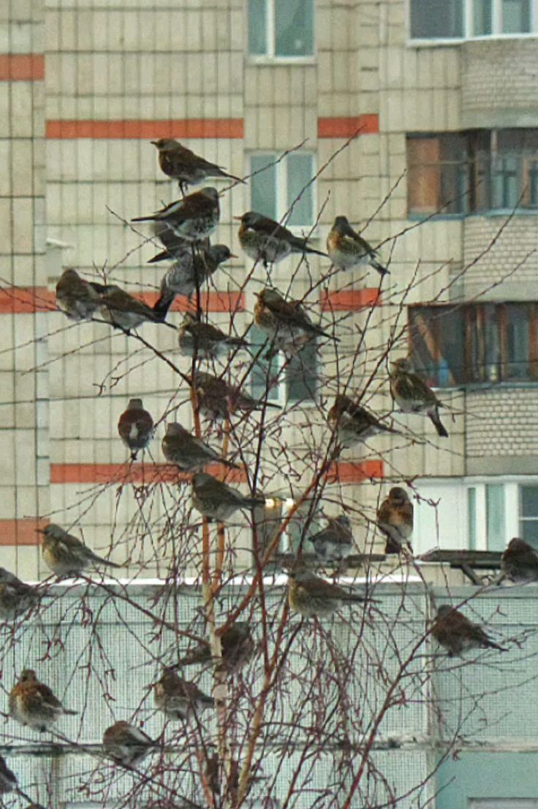

Selamat Datang

Jakarta bukan hanya gedung dan jalan raya. Taman kota, bantaran kali, dan pekarangan rumah menjadi habitat puluhan jenis burung.
Apa yang ada di situs ini?
- Katalog spesies burung yang sering terlihat.
- Panduan langkah demi langkah untuk pemula.
- Formulir untuk melaporkan hasil pengamatanmu.